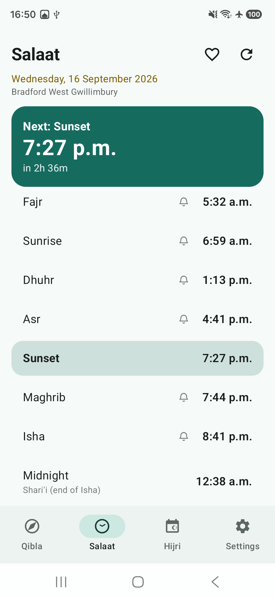

Ja'fari prayer times
Prayer times are calculated on your device. Maghrib follows the sun's angle after sunset, and Shari'i midnight is shown after Isha.
Namaz calculates Shia prayer times, the Qibla direction and the Hijri calendar right on your phone. No account, no tracking and no internet permission.
Free prayer times, Qibla, reminders and calendar. English and more languages.

Namaz is built around the practices and details Shia Muslims look for, with calculations and settings you can understand and adjust.
Prayer times are calculated on your device. Maghrib follows the sun's angle after sunset, and Shari'i midnight is shown after Isha.
Find the direction of the Kaaba with the built-in compass. Your coordinates stay on your phone.
Keep up with the Hijri date, Shia occasions and prayer reminders in one simple app.
Use your location or enter a city manually. Then choose the calculation settings that fit your practice.
Use your phone's location, search for a city, or enter coordinates yourself.
See the method and sun angles used, and adjust them in settings when needed.
Your prayer times and Qibla remain available offline, wherever you go.
Namaz has no internet permission. Prayer times and Qibla are calculated on your phone, so the app cannot upload your location or personal data. No account to create, and no tracking.